We are a team of product thinkers, designers, and engineers who believe that product visionaries should leverage cutting-edge technologies to augment their intellect and focus on what matters. Our goal is to give product visionaries more confidence and help them create the products they truly aspire to.
We strongly believe that AI-driven solutions can empower product visionaries to excel, iterate, and grow. We want to enable them to innovate and improve their solutions, resulting in exceptional products and experiences.
So what do we do?
We specialize in helping product teams ship their products faster. We provide AI-powered tools and solutions designed for UX/UI designers and product stakeholders, aimed at enhancing their designs, agility, and productivity. We assist designers in achieving enhanced efficiency and productivity through automated tasks and intelligent insights.
...but the reality is [that AI] will enhance us. So instead of artificial intelligence, I think we'll augment our intelligence.
Around 1830, during the Industrial Revolution, Karl Marx observed the impoverished state of factory workers in England. Machines, such as power looms, were replacing workers who previously used traditional handlooms. Marx believed that the introduction of power looms was plunging handloom weavers into mass poverty and unemployment.
Marx predicted that automation in industries would lead to widespread unemployment. However, the reality turned out differently. By the end of the century, the number of weavers had quadrupled compared to 1830. What Karl Marx overlooked was that the new technology not only increased demand but also enhanced the capabilities of existing weavers to produce more. Weaving a meter of cloth by the end of the century required only 2 percent of human labor, with machines handling the rest. This allowed weavers the freedom to be creative and produce more desirable textiles. With increased production speed, the overall price of cloth decreased, prompting the market to respond by purchasing more. The higher demand for textiles resulted in an increase in weaving jobs.
According to 60 Minutes, "Bank tellers have given way to ATMs. Sales clerks are surrendering to e-commerce. And switchboard operators and secretaries to voice recognition technology," arguing that digital technologies are leading to persistent unemployment. But, in fact, there are more bank tellers, sales clerks and receptionists and secretaries in 2009 than in 1999, according to the Bureau of Labor Statistics. The reason: demand.
With recent advancements in Artificial Intelligence, particularly LLMs and Generative AIs like Bard and OpenAI, we are witnessing another wave of AI products that appear to be replacing existing tools. However, their intention is to augment today's product visionaries and provide them with more time and space to effectively bring their product visions to life faster. These tools are designed not to replace, but to enhance human intellect.With recent breakthroughs in Artificial Intelligence, particularly LLMs and Generative AIs like Bard and OpenAI, we are witnessing another wave of AI products that appear to be replacing existing tools. However, their intention is to augment today's product visionaries and provide them with more time and space to effectively bring their product visions to life faster. These tools are designed not to replace, but to enhance human intellect.
At Agile Craft Labs, we are committed to create AI solutions that augment human intelligence. We are dedicated to provide valuable insights, automate labor-intensive tasks, improve collaboration, and assist product visionaries in building the products they aspire to create.
Want to know more? Or just have some conversations over virtual coffee? Say hi at hello@agilecraftlabs.com